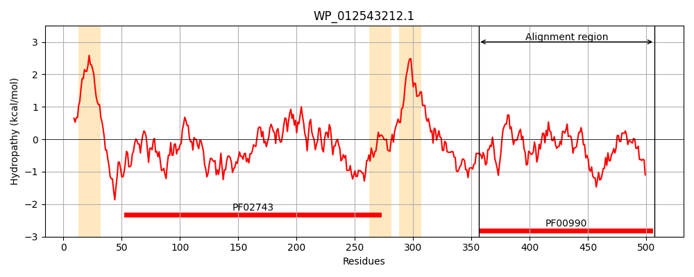
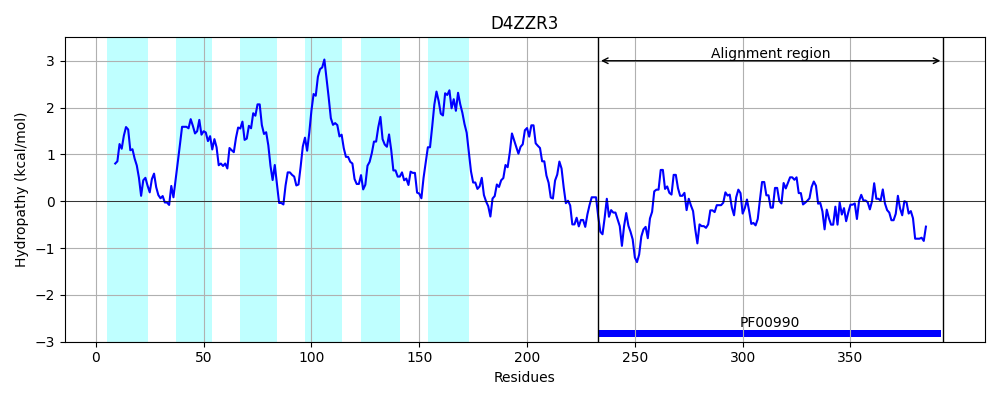
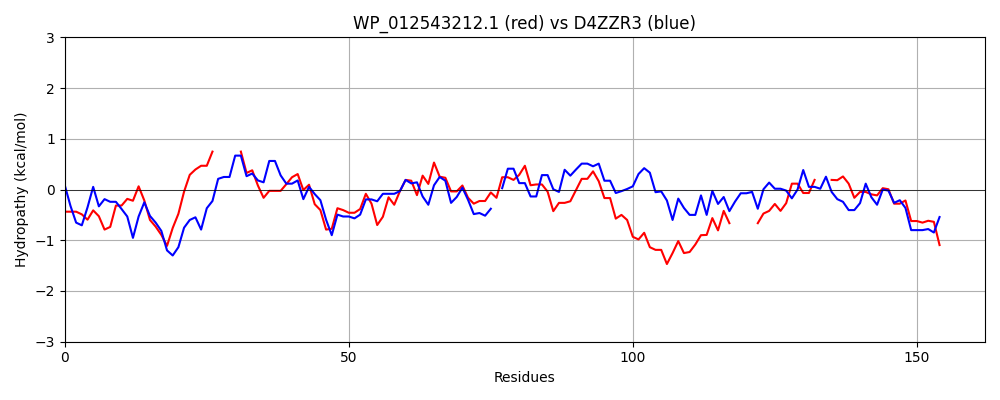

Hit Accession: D4ZZR3
Hit TCID: 9.B.34.1.3
Hit Description: gnl|BL_ORD_ID|3256 gnl|TC-DB|D4ZZR3|9.B.34.1.3 Putative diguanylate cyclase OS=Arthrospira platensis (strain NIES-39 / IAM M-135) GN=NIES39_A07490 PE=4 SV=1
Mach Len: 162
e:0.000000
Query TMS Count : 3
Hit TMS Count: 6
TMS-Overlap Score: 0.850000
Predicted Substrates:None
BLAST Alignment:
Score: 255 , Bit scores: 102 bits, E-value: 8.6e-24, Alignment length: 162, Percentage identity: 40
Query: 356 ATIDALTGCKNRRAFDSDIAALMNDHQ----PFALALVDIDNFKSINDTWGHLNGDIVLRNVAREGLQVLQPLEISLYRYGGEEFAVVFPAEHIDNARTLLETWRVNVERRTWREDGL----TVTFSAGLGEW--NMEPLDKLVVSVDEALYKAKQQGKNRI 507
+TID LTG NRR +S + + HQ P ++ L+DID+FK IND +GHL GD VL+ VA+ Q+L+ +++ +RYGGEEF V+ P I A + E RV++ + + + +T S GL E ++ LD L+ D ALY+AK QG+N++
Sbjct: 233 STIDELTGLLNRRFLNSRLEQEIAYHQQMGFPLSIMLIDIDHFKKINDQFGHLAGDYVLQKVAKLTNQLLRVNDLA-FRYGGEEFMVLLPRSEILQALDMAERLRVSISQLYFNHPDIPSDFQITASFGLSELTKDLRCLDDLLKQADLALYQAKSQGRNQV 393 | Protein Hydropathy Plots: |
|---|
|  |  |
Pairwise Alignment-Hydropathy Plot:
|
|---|
|  |